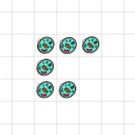
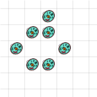
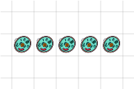
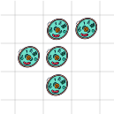

1. Einleitung./course1/wly/01/__parent.wly:2:11
1. Einleitung./course1/wly/01/__parent.wly:2:11
Im Kurs ./course1/wly/01/__parent.wly:4:5Theoretische Informatik./course1/wly/01/__parent.wly:4:14 I./course1/wly/01/__parent.wly:5:5 ./course1/wly/01/__parent.wly:5:75 haben allerhand Problemstellungen und Algorithmen./course1/wly/01/__parent.wly:6:5 kennengelernt und können nun (hoffentlich) auch für manche./course1/wly/01/__parent.wly:7:5 Ihnen noch unbekannten Probleme neue Algorithmen./course1/wly/01/__parent.wly:8:5 entwickeln. In diesem Kurs stellen wir uns abstrakter die./course1/wly/01/__parent.wly:9:5 Frage, was denn ein Algorithmus ist; was es denn heißt,./course1/wly/01/__parent.wly:10:5 etwas zu berechnen. Ein Algorithmus, beispielsweise ein./course1/wly/01/__parent.wly:11:5 Sortieralgorithmus, kann ja prinzipiell Arrays beliebiger./course1/wly/01/__parent.wly:12:5 Länge sorteren. Es gibt also unendlich viele potentielle./course1/wly/01/__parent.wly:13:5 Eingaben. Dennoch ist der Algorithmus selbst ein endliches./course1/wly/01/__parent.wly:14:5 Objekt - der Programmcode beispielsweise besteht aus./course1/wly/01/__parent.wly:15:5 endlich vielen Zeichen. Noch dazu kann ein Algorithmus nur./course1/wly/01/__parent.wly:16:5 beschränkt die ihm gegebenen Daten manipulieren; in jedem./course1/wly/01/__parent.wly:17:5 Schritt immer nur an einer bestimmten Stelle und nach./course1/wly/01/__parent.wly:18:5 festen Regeln../course1/wly/01/__parent.wly:19:5
Die Menge aller denkbaren Emailadressen ist unendlich -./course1/wly/01/__parent.wly:24:5 zumindest, solange wir für Nutzernamen und Domainnamen./course1/wly/01/__parent.wly:25:5 keine Längenbeschränkung haben. Nach welchen Regeln sind./course1/wly/01/__parent.wly:26:5 sie gebildet?./course1/wly/01/__parent.wly:27:5
Übungsaufgabe 1.1./course1/wly/01/__parent.wly:29:5 ./course1/wly/01/__parent.wly:29:5 Überlegen Sie sich, wie eine gültige Emailadresse./course1/wly/01/__parent.wly:30:9 auszusehen hat. Als konkrete Beispiele nehmen Sie bitte./course1/wly/01/__parent.wly:31:9
thomas.schmitz@hszg.de./course1/wly/01/__parent.wly:34:9 dominik@cs.sjtu.edu.cn./course1/wly/01/__parent.wly:35:9 raffaela@mayer@gmail.com./course1/wly/01/__parent.wly:36:9 lorenz.klein@greatest/company/in/the/world.com./course1/wly/01/__parent.wly:37:9 .schlaumeier@gmail.com./course1/wly/01/__parent.wly:38:9
Welches davon sind gültige Emailadressen? Können Sie./course1/wly/01/__parent.wly:41:9 genaue Regeln angeben, nach denen eine solche gebildet sein./course1/wly/01/__parent.wly:42:9 muss? Können Sie die Regeln formal aufschreiben?./course1/wly/01/__parent.wly:43:9
Übungsaufgabe 1.2./course1/wly/01/__parent.wly:45:5 ./course1/wly/01/__parent.wly:45:5 Sie alle kennen arithmetische Ausdrücke, wie wir sie zum./course1/wly/01/__parent.wly:46:9 Beispiel in Python eingeben und auswerten lassen können:./course1/wly/01/__parent.wly:47:9
>>>./course1/wly/01/__parent.wly:50:9 (6 + 8) * 3./course1/wly/01/__parent.wly:50:12 42./course1/wly/01/__parent.wly:51:9 >>>./course1/wly/01/__parent.wly:52:9 (24 / 4 / 2) * (24 / ( 4 / 2)) + 1./course1/wly/01/__parent.wly:52:12 37./course1/wly/01/__parent.wly:53:9 >>>./course1/wly/01/__parent.wly:54:9 3 + 7 * 8./course1/wly/01/__parent.wly:54:12 59./course1/wly/01/__parent.wly:55:9 >>>./course1/wly/01/__parent.wly:56:9 (2 * 3))./course1/wly/01/__parent.wly:56:12 File "<stdin>", line 1./course1/wly/01/__parent.wly:57:9 (2 * 3))./course1/wly/01/__parent.wly:58:9 ^./course1/wly/01/__parent.wly:59:9 SyntaxError: unmatched ')'./course1/wly/01/__parent.wly:60:9 >>>./course1/wly/01/__parent.wly:61:9 (* 3)./course1/wly/01/__parent.wly:61:12 File "<stdin>", line 1./course1/wly/01/__parent.wly:62:9 (* 3)./course1/wly/01/__parent.wly:63:9 ^^^./course1/wly/01/__parent.wly:64:9 SyntaxError: cannot use starred expression here./course1/wly/01/__parent.wly:65:9
Die letzten beiden waren in Pythons Augen offensichtlich./course1/wly/01/__parent.wly:68:9 nicht korrekt. Wie sind korrekte arithmetische Ausdrücke./course1/wly/01/__parent.wly:69:9 aufgebaut? Beschränken Sie sich gerne auf * und + und / und./course1/wly/01/__parent.wly:70:9 - und Zahlen und ignorieren Sie erst mal Variablen,./course1/wly/01/__parent.wly:71:9 Funktionsaufrufe und weitere Operatoren. Versuchen Sie,./course1/wly/01/__parent.wly:72:9 eine Art formale Sprache zu entwickeln, die die korrekten./course1/wly/01/__parent.wly:73:9 arithmetischen Ausdrücke beschreibt../course1/wly/01/__parent.wly:74:9
Das klassische Beispiel, wie sehr einfache Regeln ein./course1/wly/01/__parent.wly:79:5 extrem komplexes Verhalten erzeugen können, ist Conways./course1/wly/01/__parent.wly:80:5 Game of Life. Hier ist der ./course1/wly/01/__parent.wly:81:5Wikipedia-Artikel./course1/wly/01/__parent.wly:81:33 dazu./course1/wly/01/__parent.wly:82:5../course1/wly/01/__parent.wly:82:71 Die Welt von Conways Game of Life ist ein unendliches./course1/wly/01/__parent.wly:83:5 Schachbrett, in jedem jedes Feld entweder leer ist oder von./course1/wly/01/__parent.wly:84:5 einem Einzeller bevölkert ist../course1/wly/01/__parent.wly:85:5

course1/public/img/game-of-life/game-of-life-01-01.svgIn jedem Zeitschritt weicht die derzeitige Generation./course1/wly/01/__parent.wly:95:5 einer neuen. Wo neue Einzeller entstehen, das hängt davon./course1/wly/01/__parent.wly:96:5 ab, wie viele der benachbarten 8 Felder von Einzellern./course1/wly/01/__parent.wly:97:5 besetzt sind../course1/wly/01/__parent.wly:98:5
Einzeller bleibt:./course1/wly/01/__parent.wly:102:14 wenn auf einem Feld ein Einzeller lebt./course1/wly/01/__parent.wly:102:32 und in seiner 8-Nachbarschaft zwei oder drei Einzeller./course1/wly/01/__parent.wly:103:13 leben, dann überlebt er; in der nächsten Generation wird./course1/wly/01/__parent.wly:104:13 dort wieder ein Einzeller leben../course1/wly/01/__parent.wly:105:13
Einzeller entsteht: wenn auf einem Feld im Moment kein./course1/wly/01/__parent.wly:108:14 Einzeller lebt, in der 8-Nachbarschaft aber genau drei./course1/wly/01/__parent.wly:109:13 Einzeller leben, dann entseht hier in der nächsten./course1/wly/01/__parent.wly:110:13 Generation ein neuer Einzeller../course1/wly/01/__parent.wly:111:13
Im Umkehrschluss: wenn ein Einzeller in seiner./course1/wly/01/__parent.wly:113:5 8-Nachbarschaft vier oder mehr weitere Einzeller hat, dann./course1/wly/01/__parent.wly:114:5 stirbt er an Überbevölkerung; gibt es in der./course1/wly/01/__parent.wly:115:5 8-Nachbarschaft keinen oder nur einen Einzeller, dann./course1/wly/01/__parent.wly:116:5 stirbt er an Vereinsamung. Wir müssen also für jedes Feld./course1/wly/01/__parent.wly:117:5 zählen, wieviele der benachbarten Felder bevölkert sind:./course1/wly/01/__parent.wly:118:5

course1/public/img/game-of-life/game-of-life-01-02.svg
course1/public/img/game-of-life/game-of-life-01-03.svgWas geschieht nun, wenn wir weitere Generationen./course1/wly/01/__parent.wly:135:5 betrachten? Stirbt die Population aus? Explodiert sie?./course1/wly/01/__parent.wly:136:5 Stabilisiert sie sich irgendwann?./course1/wly/01/__parent.wly:137:5
Übungsaufgabe 1.3./course1/wly/01/__parent.wly:139:5 ./course1/wly/01/__parent.wly:139:5 Spiele Sie mit Conways Game of Life! Hier finden Sie einen./course1/wly/01/__parent.wly:140:9 Simulator:./course1/wly/01/__parent.wly:141:9 ./course1/wly/01/__parent.wly:142:9playgameoflife.com./course1/wly/01/__parent.wly:142:10../course1/wly/01/__parent.wly:142:58
Probieren Sie aus, was geschieht, wenn die./course1/wly/01/__parent.wly:146:17 Anfangspopulation ein "Pfad" ist, z.B../course1/wly/01/__parent.wly:147:17

course1/public/img/game-of-life/game-of-life-02-01.svgProbieren Sie Pfade verschiedener Länge aus. Welche./course1/wly/01/__parent.wly:154:17 sterben aus? Welche überleben, und was geschieht mit ihnen?./course1/wly/01/__parent.wly:155:17
Probieren Sie das "f-Pentomino" als Startkonfiguration./course1/wly/01/__parent.wly:158:17 aus:./course1/wly/01/__parent.wly:159:17

course1/public/img/game-of-life/game-of-life-03-01.svgProbieren Sie meine obige Startkonfiguration aus../course1/wly/01/__parent.wly:167:17
Finden Sie weitere interessante Startkonfigurationen../course1/wly/01/__parent.wly:170:17
Was hat das Game of Life mit TI-2 zu tun? Nun, es./course1/wly/01/__parent.wly:172:5 illustriert, wie eine endliche, sogar sehr kleine./course1/wly/01/__parent.wly:173:5 Regelmenge sehr komplexe Phänomene erzeugen kann. In der./course1/wly/01/__parent.wly:174:5 Tat, das Game of Life ist Turing-vollständig; das heißt in./course1/wly/01/__parent.wly:175:5 etwa, sie können eine Anfangskonfiguration bauen, die dann./course1/wly/01/__parent.wly:176:5 einen ganzen Rechner simuliert. Klingt kaum vorstellbar../course1/wly/01/__parent.wly:177:5 Wenn wir am Ende dieses Kurses angelangt sind, werden Sie./course1/wly/01/__parent.wly:178:5 aber verstehen, warum das sogar recht plausibel ist../course1/wly/01/__parent.wly:179:5
Es geht also in diesem Kurs vor Allem um folgende Fragen:./course1/wly/01/__parent.wly:184:5
Wie können wir endliche Beschreibungen von unendlichen./course1/wly/01/__parent.wly:188:13 Objekten angeben?./course1/wly/01/__parent.wly:189:13
Was heißt es, etwas zu berechnen? Welche Modelle fürs./course1/wly/01/__parent.wly:192:13 Rechnen gibt es, die einerseits ./course1/wly/01/__parent.wly:193:13umfassend./course1/wly/01/__parent.wly:193:46 sind, also die./course1/wly/01/__parent.wly:193:56 möglichst viel können, andererseits auch ./course1/wly/01/__parent.wly:194:13physikalisch./course1/wly/01/__parent.wly:194:55 realisierbar./course1/wly/01/__parent.wly:195:13 sind?./course1/wly/01/__parent.wly:195:26